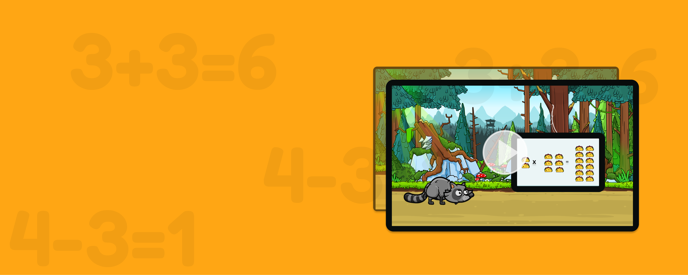

Math facts at your fingertips. Make math more fun for every kid—ages 7-12
One Two Taco is built from the feedback of kids. Kids experienced in educational games gave input at every step of development, informing characters, scenarios, feedback, and learning strategies. We know the game will tickle your child’s funny bone because THEY told us so! Math at first may be “boring” or “hard”; with One Two Taco, math is approachable and fun to play!
Teachers are also essential to the DNA of One Two Taco, from research to implementation, as they tailor levels of game play to their curriculum. They say, “I can use the game and still use my own teaching style to present it. I have gained strategies and tools in my toolbox to use in my class. I can see One Two Taco games helping kids to grasp math facts effortlessly. It’s awesome!!!”
Teachers can’t say enough about One Two Taco.
Over a billion parents trust our curriculum and kids love it!

Come on, “Buddy” is waiting.
Let’s get started!